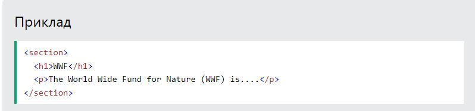
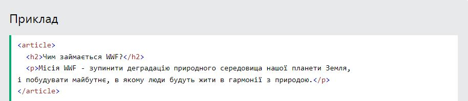

HTML5 Семантичні елементи
Семантичний елемент чітко описує його значення як для браузера, так і
для розробника.
Приклади не семантичних елементів: <div> і <span>- нічого не говорить
про його вміст.
Приклади семантичних елементів: <form>, <table> і <article>- чітко визначає його зміст.
HTML5 <section> елемент
Елемент <section> визначає розділ в документі.
Згідно з документацією в3к'с HTML5: "розділ представляє собою
тематичну угруповання контенту, зазвичай з заголовком".
Домашня сторінка зазвичай може бути розділена на розділи для
ознайомлення, змісту і контактної інформації.

HTML5 <article> елемент
Елемент <article> визначає незалежний, автономний вміст.
Стаття повинна мати сенс самостійно, і вона повинна мати можливість
читати його незалежно від іншої частини веб-сайту.
Приклади того, де можна використовувати елемент <article>:
- Повідомлення на форумі
- блозі
- Газетна стаття
